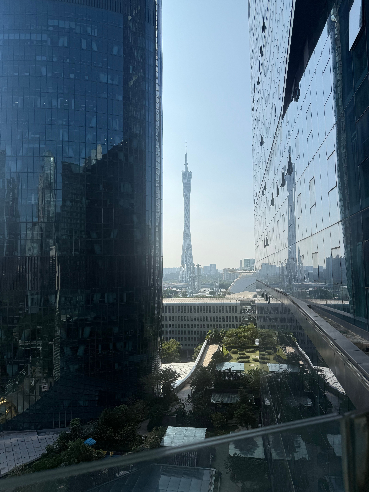

DESTINATION GUIDE

DESTINATION GUIDE
广州是中国南方的重要门户与千年商都，珠江水脉滋养出开放务实的岭南气质。白云国际机场、国际铁路与港口共同支撑其作为粤港澳大湾区核心城市的联通能力。
地处珠江三角洲北缘，濒临南海，是连接华南腹地与海洋的重要门户。
亚热带季风气候
温暖湿润、雨量充沛，夏季漫长炎热，冬季短而温和，春季湿度相对较高。
建城已有两千多年，长期作为对外贸易重镇，在海上丝绸之路中留下深厚的港口印记。
粤语、粤剧、骑楼和商贸传统共同构成岭南文化鲜明而务实的底色。
夏季闷热多雨；城市公共交通便利，换乘时请关注站内指引。